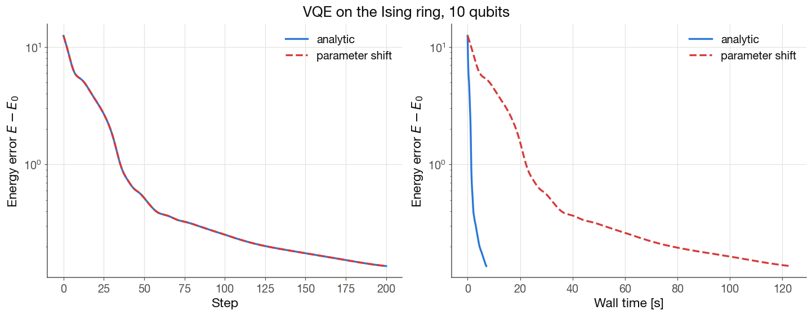
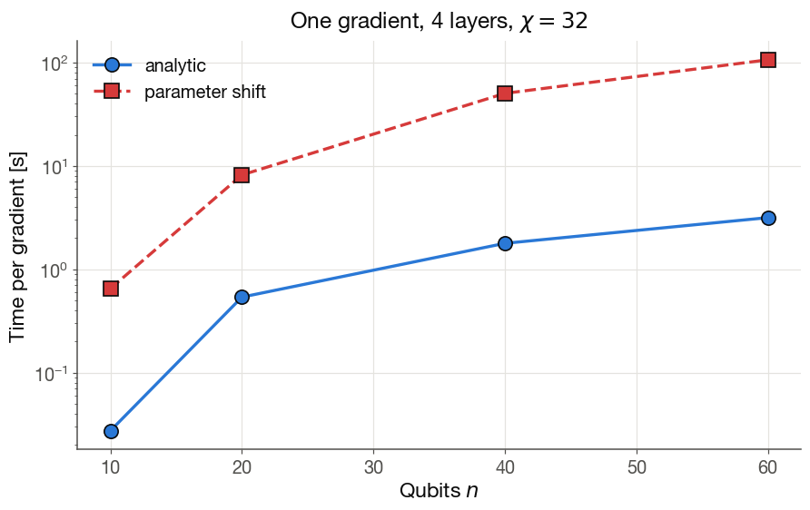
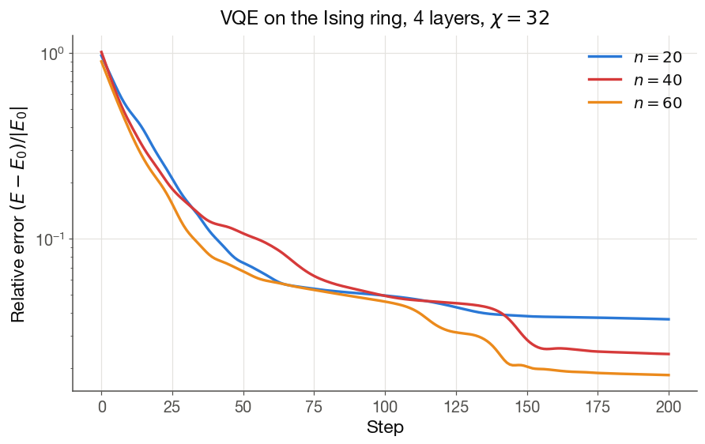

Training a VQE with analytic gradients¶
A variational quantum eigensolver (VQE) tunes the angles of a circuit to minimize the energy of a Hamiltonian, and it needs the gradient of that energy at every step. On a quantum computer the gradient comes from the parameter-shift rule: two extra circuits per parameter. An HSMPO can do much better, because it knows the state classically: HSMPO.gradient computes every derivative at once, for about the cost of two expectation values.
In this tutorial you will learn how to call gradient, check it against the parameter-shift rule, train a VQE with it, and see how its cost scales with the system size.
[1]:
import time
import matplotlib.pyplot as plt
import numpy as np
from qibo.config import log
from mpstab import HSMPO
from mpstab.models.ansatze import HardwareEfficient
from mpstab.plotting import COLORS, set_style
set_style()
log.setLevel("WARNING") # silence qibo's backend message
The problem¶
We look for the ground state of the transverse-field Ising model on a ring of \(n\) qubits,
at the critical field \(h = 1\). We write it as a dict of Pauli strings, one of the observable formats HSMPO accepts.
This model maps to free fermions, so its ground energy is known exactly for any \(n\):
This gives us an exact reference even for sizes where exact diagonalization is out of reach.
[2]:
def tfim_ring(nqubits, field=1.0):
terms = {}
for q in range(nqubits):
zz = ["I"] * nqubits
zz[q] = zz[(q + 1) % nqubits] = "Z"
terms["".join(zz)] = -1.0
x = ["I"] * nqubits
x[q] = "X"
terms["".join(x)] = -field
return terms
def ground_energy(nqubits, field=1.0):
k = np.pi * (2 * np.arange(nqubits) + 1) / nqubits
return -np.sum(np.sqrt(1 + field**2 - 2 * field * np.cos(k)))
The ansatz¶
We use HardwareEfficient: each layer applies an \(R_Y\) rotation to every qubit, then a ring of CZ gates. With 4 layers on 10 qubits it has 40 parameters, all of them \(R_Y\) angles, so it prepares real states, which is enough for this Hamiltonian. The angles start at random values.
The CZ gates are Clifford, so HSMPO absorbs them into its stabilizer tableau; every \(R_Y\) becomes a Pauli rotation applied to the MPS.
[3]:
n = 10
hamiltonian = tfim_ring(n)
exact = ground_energy(n)
np.random.seed(0)
hsmpo = HSMPO(HardwareEfficient(nqubits=n, nlayers=4), progress=False)
initial = np.array([p[0] for p in hsmpo.get_parameters()])
print(f"{len(initial)} parameters")
print(f"initial energy: {hsmpo.expectation(hamiltonian):.4f} exact: {exact:.4f}")
40 parameters
initial energy: -0.3518 exact: -12.7849
The gradient¶
gradient takes the same observable as expectation and returns one derivative per parameter, in the order of get_parameters. Its options are:
Option |
Default |
Meaning |
|---|---|---|
|
all |
indices of the parameters to differentiate |
|
|
skip the rotations that cannot affect the observable (exact) |
|
|
|
|
|
bond cap of the backward pass; |
As a reference we implement the parameter-shift rule: shift one angle by \(\pm\pi/2\), evaluate the energy on both shifted circuits, and take half the difference. Each evaluation uses expectation_from_partition, which also skips the rotations outside the observable’s light cone.
[4]:
def parameter_shift(hsmpo, hamiltonian, parameters, indices=None):
indices = range(len(parameters)) if indices is None else indices
gradient = []
for i in indices:
values = []
for sign in (1, -1):
shifted = parameters.copy()
shifted[i] += sign * np.pi / 2
hsmpo.ansatz.circuit.set_parameters(shifted)
values.append(hsmpo.expectation_from_partition(hamiltonian, 0.0)[0])
gradient.append((values[0] - values[1]) / 2)
hsmpo.ansatz.circuit.set_parameters(parameters)
return np.array(gradient)
start = time.perf_counter()
analytic = hsmpo.gradient(hamiltonian)
analytic_time = time.perf_counter() - start
start = time.perf_counter()
shifted = parameter_shift(hsmpo, hamiltonian, initial)
shift_time = time.perf_counter() - start
print(f"max |difference|: {np.abs(analytic - shifted).max():.1e}")
print(f"analytic: {analytic_time:.3f} s parameter shift: {shift_time:.3f} s")
max |difference|: 5.6e-07
analytic: 0.060 s parameter shift: 0.641 s
The two gradients agree to the truncation cutoff of the MPS, and the analytic one is already several times faster on this small circuit.
Training¶
We minimize the energy with Adam, a standard gradient-based optimizer. Each step sets the new angles, which rebuilds the HSMPO’s state, records the energy, and asks for the gradient. We run the same training twice, from the same initial angles: once with the analytic gradient and once with the parameter-shift rule.
[5]:
class Adam:
def __init__(self, learning_rate=0.05, beta1=0.9, beta2=0.999, eps=1e-8):
self.learning_rate, self.beta1, self.beta2, self.eps = learning_rate, beta1, beta2, eps
self.m = self.v = 0.0
self.t = 0
def step(self, parameters, gradient):
self.t += 1
self.m = self.beta1 * self.m + (1 - self.beta1) * gradient
self.v = self.beta2 * self.v + (1 - self.beta2) * gradient**2
m = self.m / (1 - self.beta1**self.t)
v = self.v / (1 - self.beta2**self.t)
return parameters - self.learning_rate * m / (np.sqrt(v) + self.eps)
def train(hsmpo, hamiltonian, parameters, gradient, steps):
optimizer = Adam()
energies, times = [], []
start = time.perf_counter()
for step in range(steps + 1):
hsmpo.set_parameters(parameters)
energies.append(hsmpo.expectation(hamiltonian))
times.append(time.perf_counter() - start)
if step < steps:
parameters = optimizer.step(parameters, gradient(parameters))
return np.array(energies), np.array(times)
steps = 200
runs = {
"analytic": train(
hsmpo, hamiltonian, initial, lambda p: hsmpo.gradient(hamiltonian), steps
),
"parameter shift": train(
hsmpo, hamiltonian, initial, lambda p: parameter_shift(hsmpo, hamiltonian, p), steps
),
}
for name, (energies, times) in runs.items():
print(
f"{name:>15}: {times[-1]:6.1f} s, {times[-1] / steps * 1e3:4.0f} ms per step, "
f"final energy {energies[-1]:.6f}"
)
analytic: 7.1 s, 36 ms per step, final energy -12.648185
parameter shift: 122.9 s, 615 ms per step, final energy -12.648185
The two runs follow the same trajectory: the gradients agree, so Adam takes the same steps. The parameter-shift line is dashed so that both stay visible. Against the wall time, the analytic gradient reaches the same energy many times sooner.
The error does not go to zero: four layers of \(R_Y\) rotations cannot represent the ground state exactly, so the training stops at the best state this ansatz can reach.
[6]:
styles = {
"analytic": dict(color=COLORS["blue"]),
"parameter shift": dict(color=COLORS["red"], ls="--"),
}
fig, (left, right) = plt.subplots(1, 2, figsize=(13, 5))
for name, (energies, times) in runs.items():
left.semilogy(energies - exact, label=name, **styles[name])
right.semilogy(times, energies - exact, label=name, **styles[name])
left.set_xlabel("Step")
right.set_xlabel("Wall time [s]")
for axis in (left, right):
axis.set_ylabel("Energy error $E - E_0$")
axis.legend()
fig.suptitle(f"VQE on the Ising ring, {n} qubits")
plt.show()

Cost per gradient¶
The parameter-shift rule needs two energy evaluations per parameter, so its cost grows with the number of parameters times the cost of one evaluation. The analytic gradient costs about one forward and one backward pass of the circuit, whatever the number of parameters.
We time one gradient for growing rings, with 4 layers and a bond dimension capped at \(\chi = 32\). To keep this quick, the parameter-shift rule is timed on 16 evenly spaced parameters and scaled to all of them.
[7]:
sizes = [10, 20, 40, 60]
max_bond = 32
cost = {"analytic": [], "parameter shift": []}
for size in sizes:
np.random.seed(0)
model = HSMPO(
HardwareEfficient(nqubits=size, nlayers=4), max_bond_dimension=max_bond, progress=False
)
observable = tfim_ring(size)
parameters = np.array([p[0] for p in model.get_parameters()])
start = time.perf_counter()
model.gradient(observable)
cost["analytic"].append(time.perf_counter() - start)
subset = np.linspace(0, len(parameters) - 1, 16).astype(int)
start = time.perf_counter()
parameter_shift(model, observable, parameters, subset)
cost["parameter shift"].append(
(time.perf_counter() - start) * len(parameters) / len(subset)
)
print(
f"n = {size:2d}, {len(parameters):3d} parameters: "
f"analytic {cost['analytic'][-1]:6.2f} s "
f"parameter shift {cost['parameter shift'][-1]:7.2f} s "
f"({cost['parameter shift'][-1] / cost['analytic'][-1]:.0f}x)"
)
n = 10, 40 parameters: analytic 0.03 s parameter shift 0.65 s (24x)
n = 20, 80 parameters: analytic 0.54 s parameter shift 8.18 s (15x)
n = 40, 160 parameters: analytic 1.78 s parameter shift 50.32 s (28x)
n = 60, 240 parameters: analytic 3.16 s parameter shift 106.31 s (34x)
[8]:
plt.semilogy(sizes, cost["analytic"], marker="o", label="analytic", **styles["analytic"])
plt.semilogy(
sizes, cost["parameter shift"], marker="s", label="parameter shift", **styles["parameter shift"]
)
plt.xlabel("Qubits $n$")
plt.ylabel("Time per gradient [s]")
plt.title(f"One gradient, 4 layers, $\\chi = {max_bond}$")
plt.legend()
plt.show()

The gap widens with the size: at 60 qubits the circuit has 240 parameters, and the parameter-shift rule pays for 480 evaluations where the analytic gradient pays for about two.
Larger systems¶
With the analytic gradient, training rings of tens of qubits takes minutes. We train 20, 40 and 60 qubits with the same ansatz, \(\chi = 32\), and compare with the exact free-fermion energy through the relative error \((E - E_0)/|E_0|\).
[9]:
large = {}
for size in [20, 40, 60]:
np.random.seed(0)
model = HSMPO(
HardwareEfficient(nqubits=size, nlayers=4), max_bond_dimension=max_bond, progress=False
)
observable = tfim_ring(size)
parameters = np.array([p[0] for p in model.get_parameters()])
energies, times = train(
model, observable, parameters, lambda p: model.gradient(observable), steps
)
large[size] = (energies, times)
error = (energies[-1] - ground_energy(size)) / abs(ground_energy(size))
print(
f"n = {size}: {times[-1]:5.0f} s ({times[-1] / steps:.2f} s per step), "
f"E = {energies[-1]:.4f}, E0 = {ground_energy(size):.4f}, relative error {error:.1e}"
)
n = 20: 69 s (0.34 s per step), E = -24.5524, E0 = -25.4910, relative error 3.7e-02
n = 40: 175 s (0.88 s per step), E = -49.7234, E0 = -50.9427, relative error 2.4e-02
n = 60: 300 s (1.50 s per step), E = -74.9946, E0 = -76.4031, relative error 1.8e-02
[10]:
colors = [COLORS["blue"], COLORS["red"], COLORS["orange"]]
for (size, (energies, _)), color in zip(large.items(), colors):
exact_size = ground_energy(size)
plt.semilogy((energies - exact_size) / abs(exact_size), color=color, label=f"$n = {size}$")
plt.xlabel("Step")
plt.ylabel("Relative error $(E - E_0)/|E_0|$")
plt.title(f"VQE on the Ising ring, 4 layers, $\\chi = {max_bond}$")
plt.legend()
plt.show()

All three sizes train in a few hundred steps to a relative error of a few percent, set again by the four-layer ansatz rather than by the gradient. With the parameter-shift rule, each of these trainings would take tens of times longer.
Summary¶
HSMPO.gradient(observable)returns the derivative ofexpectation(observable)with respect to every parameter, matching the parameter-shift rule.The default
"adjoint"method costs about two expectation values whatever the number of parameters, so it gets faster than the parameter-shift rule the larger the circuit.With a bond-dimension cap, the gradient inherits the truncation error of the MPS, to first order: an energy, and so the parameter-shift rule, is only affected to second order, so at the same \(\chi\) the parameter-shift gradient looks more accurate. Raise \(\chi\) when the gradient error matters;
costate_bondcontrols the extra error of the backward pass.A parameter whose gate sits at a Clifford angle (a multiple of \(\pi/2\)) is absorbed into the stabilizer tableau and cannot be differentiated:
gradientraises an error rather than returning zero.